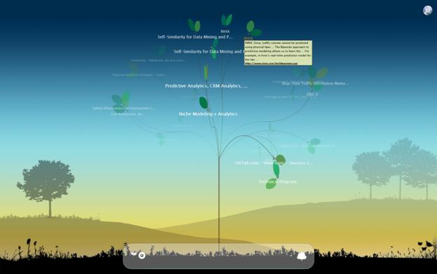

Frequently Asked Questions
What is Tafiti?
Using Tafiti
See a video walk through of Tafiti's functionality.
What is the shelf and how do I use it?
I see a link that says “Tree View”. What does it do?
Technical Issues
What operating systems and browsers are supported by Tafiti?
My browser asks me to allow popups for this site, is that expected?
Do I need a LiveID to use Tafiti?
When I try to visit http://www.tafiti.com in Firefox I receive a redirect error. Is Tafiti offline?
How do I provide feedback on Tafiti?
What technologies are used in Tafiti?
What is Tafiti?
Tafiti, which means "do research" in Swahili, is an experimental search front-end from Microsoft, designed to help people use the Web for research projects that span multiple search queries and sessions by helping visualize, store, and share research results. Tafiti uses both Microsoft Silverlight and Live Search to explore the intersection of richer experiences on the Web and the increasing specialization of search.
What is the shelf and how do I use it?
The shelf is located on the right side of the screen and provides a place to store associated search results, such as the things you want to retain from a particular query or set of queries. Multiple results of different types can be stored on the shelf. There are five shelves and the contents of a single shelf constitute a “stack”. You must be signed in to store items in the shelf from session to session.
- Putting things on the shelf - Search results can be dragged from the results pane to the shelf.
- Labeling a stack – hover over a particular shelf and click to type a label on the text box which appears.
- Seeing the contents of a stack – click on a particular stack (outside the label area) to see all the contents displayed in the Stack View.
- Delete individual items – hover over an item and click the red Remove button which will appear.
- Send a stack to someone else via email – click on the link at the top of the Stack view.
- Post a stack to your Windows Live Space - click on the link at the top of the Stack view.
- Clear a single stack on the shelf – click on the white X that appears when you hover over a particular stack.
I see a link that says Tree View. What does that do?
Clicking on the Tree View link will provide a tree-based visualization of your web search results.
This tree visualization slowly cycles through and displays all the results for your query.
You can adjust how many results are show using the slider bar located beneath the tree.
You can return to the main result window by pressing the ESC key or by clicking on the star in the top right of the screen.
Do I need a LiveID to use Tafiti?
For performing searches and taking advantage of the visualization capabilities in Tafiti, a LiveID is not required.
However, if you would like to save items on shelves for future reference, you will need to sign in with a LiveID. The LiveID is used to identify the owner of a shelf and make it available to you on your next session – even if you are on a different computer.
What operating systems and browsers are supported by Tafiti?
Tafiti is a Silverlight application and supports all currently supported platforms for that technology.
On Windows Vista and Windows XP SP2, this includes Microsoft Internet Explorer 6, Windows Internet Explorer 7, Mozilla Firefox 1.5.0.8, and Firefox 2.0.x.
On Apple Mac OS X this includes Firefox 1.5.0.8, Firefox 2.0.x, and Apple Safari 2.0.4.
My browser asks me to allow popups for this site, is that expected?
Yes. When clicking on an item for your search results, Tafiti displays this in a separate window. If you have pop up blocking turned on in your browser, your browser provides an option that named “always accept popups only from this site’. Select that option and you will not see this message in future.
When I try to visit www.tafiti.com in Firefox I receive a redirect error. Is Tafiti offline?
No. If you see this error, it is because you have cookies turned off in Firefox. You can change this by performing the following steps:
- Click on the Tools item in the menu bar
- Click on the Options item in the Tools menu
- Click on the Privacy Tab
- Click on the ‘Accept cookies from sites’ checkbox
- In the ‘Keep Until’ drop down box, select the option you prefer.
If you refresh the page, you will be delivered to the Tafiti website.
When I sign out of Tafiti in Safari, running on a Macintosh, I get an error that says Tafiti can’t sign out. Why does this happen?
This is because Safari on the Macintosh does not recognize the issuer of the certificate used on Tafiti. This is primarily a cosmetic issue, and will be corrected in an upcoming beta release. Alternatively, if you use the Firefox browser on Macintosh you will not see this issue.
What technologies are used in Tafiti?
Tafiti uses Silverlight 1.0 RC and AJAX to provide rich, cross-platform user experiences and leverages the following Microsoft services on the backend:
How do I provide feedback on Tafiti?
You can leave feedback on Tafiti by clicking on the feedback link located in the upper left of the Tafiti UI. In addition, you can send email directly to tafiti@microsoft.com